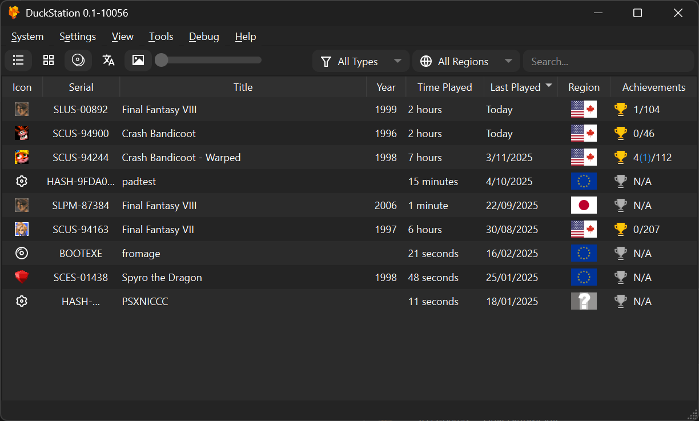
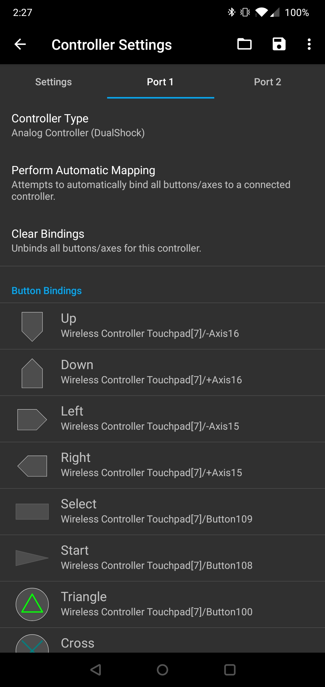

DuckStation 全能力盘点：为什么它成了 PS1 模拟器新标杆
从多端安装、手柄控制到画质增强与金手指生态，逐一拆解 DuckStation 的能力边界与适用场景。
如果要给 PS1 模拟器排个当今梯队，DuckStation 大概是最有希望冲进第一的那个。从它的官网就能看出，它从 2020 年才开始公开活跃，却在短短几年内把精度还原、性能、跨平台体验三条线同时拉满——老玩家把它当 PCSX2 之后最值得长期持有一款 PS1 模拟器，新玩家直接装就能跑，几乎没有入门门槛。这篇盘点尝试把它的能力面完整铺开，让你知道这个软件到底能做什么、哪些地方做得漂亮、哪些场景可能还有短板。
多端覆盖：从桌面到掌机的全链路支持
DuckStation 最直观的优势是它几乎把所有主流平台都吃下来了。桌面端 Windows、macOS、Linux 通吃，移动端安卓也没有落下。每个平台的安装路径都经过了认真设计，不是简单粗暴的移植。
Windows 用户有两条路：一条是安装器，从下载页获取后走标准应用分发流程，开始菜单、桌面快捷方式一应俱全；另一条是 Zip 便携包，解压到子目录就能跑，想让配置、存档跟着程序目录走，建一个空文件 portable.txt 就自动切换便携模式——这个细节照顾到了把模拟器装在移动硬盘里走哪带哪的玩家。骁龙笔记本用户也不用愁，专门的 arm64 安装器已经备好。
安卓端的门槛放得更低。架构上 armv7、AArch64、x86_64 全支持，系统 Android 6.0 起就能装，GPU 只要能跑 OpenGL ES 3.1 或 Vulkan 1.0 就够。近十年的安卓手机基本上都是硬件达标，性能瓶颈只取决于你把内部分辨率拉到了多少。官方那句"比土豆快的 CPU 都行"不是玩笑——PS1 本身性能孱弱，模拟开销主要花在精度还原上，默认配置已经做好了低配平衡。

跨平台体验不止是"能装"这么简单。同一个游戏的存档状态、按键映射方案，在桌面和安卓之间可以通过同步机制打通。对于同时在 PC 和掌机上折腾 PS1 的玩家来说，这一点比单纯的跨平台覆盖更实用。
手柄控制：从自动识别到定制化的完整体系
PS1 当年的手柄体系并不简单——普通 DualShock、数字手柄、Namco 的 NeGcon 斜置方向盘、光枪 GunCon/Justifier，还有多人用的 Multitap 分线器。DuckStation 在控制器这一块做得比同级别模拟器更细。
自动映射能覆盖大多数常见手柄，插上就能用。但它的精华在手动绑定环节：端口设置里逐项点选按键，按下实体键或拨动摇杆就捕获完成，摇杆轴向独立绑定，绑定后可以在游戏里画圈验证方向。轴序错乱、按键镜像、老手柄识别不全这些坑，手动绑定都能兜底。
特殊控制器类型是真正拉开差距的地方。选 DualShock 模拟类型就有完整的双摇杆、十四键和震动反馈；切到 Digital 就只剩十字键和四个动作键；NeGcon 类型会把方向盘的斜置手感模拟出来，赛车游戏玩出来的反馈和普通手柄完全不一样；光枪类型用鼠标模拟瞄准，桌面端玩 Point Blank 一类打靶游戏的时候体验接近原装光枪。
多人场景也考虑到了。Multitap 模式可以让一台主机接最多 8 个手柄，Port 2 到 Port 4 分别绑定各自的控制器，再配合 Per-Game Configuration 的开关——每个游戏记住一套不同的映射方案，下次直接进游戏就不用重绑。

画质增强与性能平衡：精度与流畅度的双重追求
模拟器的画质增强一直是个两难的事——拉满分辨率和滤镜画面惊艳，但低配设备直接掉到幻灯片；保持默认画质又觉得对不起当年喜欢的游戏。DuckStation 的做法是给足选项、把选择交给用户，同时做好默认配置的平衡。
核心的内部分辨率倍数是最大的性能开关。64 位设备在两到三倍分辨率下还能保持流畅，拉到五倍以上画面细节爆炸但 GPU 压力陡增。渲染后端选 Vulkan 还是 OpenGL 也有实际差异，Vulkan 在绝大多数设备上的表现更稳定一些。PGXP、宽屏补丁这些单项开销不大的增强，全开会累积掉帧，需要根据设备能力取舍。
它的性能优化思路很实际：不追求所有功能默认全开，而是让默认配置适合最广泛的设备，给追求极致的玩家留足调参空间。安卓 32 位设备虽然官方承认优化优先级低，但保持默认配置跑大多数游戏还是没问题的。这种平衡思路让 DuckStation 既能覆盖低端设备，也能在高端设备上展示出 PS1 游戏被高清化之后的真正潜力。
金手指与辅助生态：内置数据库+成就系统的双轨并行
金手指这件事，很多模拟器要么让用户自己找代码手动输入，要么干脆不提供。DuckStation 的方案明显更照顾普通玩家——它内置了一个社区维护的金手指数据库，覆盖四千多款游戏，热门游戏开箱就能查。
启用流程也很克制。首次打开 Patch Codes 会弹警告，提示金手指可能造成不可预期的行为，然后建议只对当前游戏启用。勾选代码返回游戏，大多数即时生效，个别需要场景刷新。桌面端在游戏列表右键属性里操作，逻辑一致。
但有一个硬约束：金手指和 RetroAchievements 硬核模式是互斥的。刷成就时开金手指会直接断开成就追踪，反过来也一样。这是 DuckStation 最值得称赞的设计之一——它没有为了便利放弃成就系统的严肃性，两套机制并行但各有边界，玩家自己选。
数据库跟着模拟器版本更新，来自社区仓库 chtdb 的持续维护。想手动加代码或导入补丁数据库的进阶玩家，DuckStation文档里也给了完整流程。
短板也要说：这些场景可能让你纠结
说了这么多优点，DuckStation 也不是没有局限。最明显的两个：成就系统和金手指的互斥关系让一部分玩家头疼——想开无限金钱体验剧情又不想放弃成就记录，但两者只能选其一；安卓 32 位设备的优化优先级确实低，如果你手里只有老款 32 位手机，预期要放低。
平台覆盖也有遗漏：Windows 7 和 8.1 已经彻底不支持了，只能装旧版本。macOS 用户如果还在跑 Catalina 之前的系统，也需要找早期构建。另外，模拟器精度还原的代价是某些冷门游戏的兼容性偶尔不如更老的模拟器——不是跑不动，是运行时可能有一些细微的时序差异。
便携化做得不错，但跨平台的存档同步需要手动配置，没有云端自动同步。对于在多个设备之间切换的重度玩家来说，这还是要花点心思。
什么样的人该用它
首先是有明确 PS1 怀旧需求的玩家。如果你家里还堆着几张旧光盘、硬盘里存着多年前下载的 ISO，DuckStation 基本上是当下最好的选择——精度够、画质能拉、多端覆盖，一张光盘的价值能被重新释放。
其次是安卓掌机折腾党。从 Retroid Pocket 到 Steam Deck OLED，DuckStation 在这些设备上的表现已经被广泛验证过。内部分辨率、宽屏补丁、手柄映射，一套组合拳下来 PS1 游戏的体验不输当年的原版主机。
第三是复古游戏内容创作者。画质增强的丰富选项 + 精度还原 + 内置金手指数据库，对于做实况、做教程、做游戏回顾的内容生产来说，DuckStation 提供了足够多的素材空间和操作便利。
如果你刚好是以上三类之一，DuckStation 值得认真装起来。它的官网有完整的入门指南，下载渠道也很明确，文档里几乎覆盖了所有常见问题的解决方案。这些资料分别维护在 GitHub、Gitee 和 GitCode 上，哪个访问顺畅就用哪个。